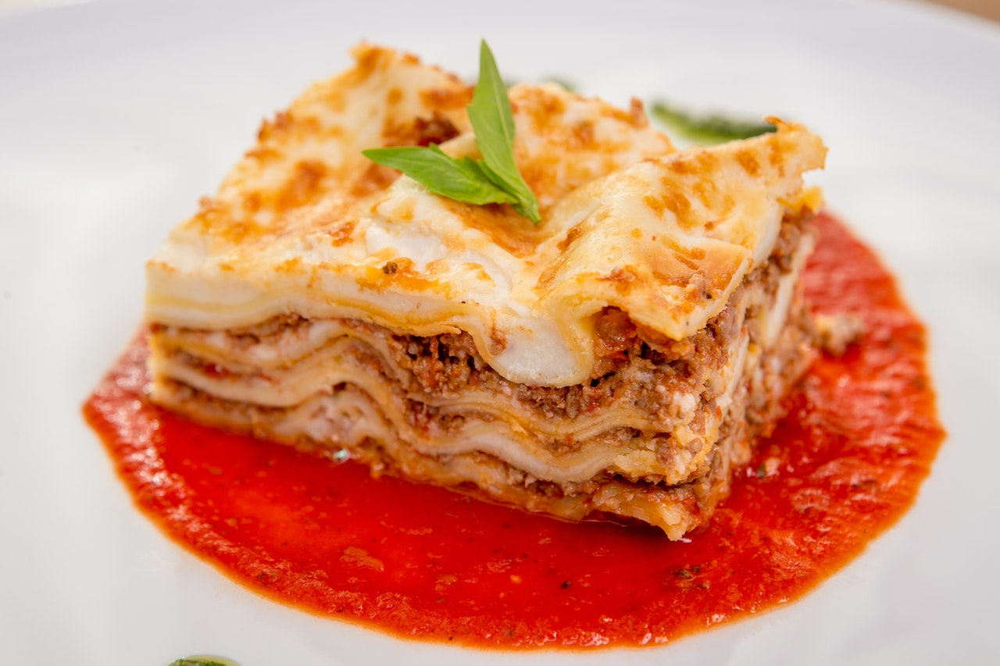

Lasagnes

Lasagnes
Couches alternées de pâtes lasagnes
ingrédients :
pâtes
mozarelle
sauce bolognaise
sauce béchamel
étapes
Mettre dans un plat environ cinq couches successives de sauce bolognaise, de fromage (ricotta, mozzarella ou parmesan), de pâtes lasagnes. Terminez par du fromage
Faire cuire à couvert à four chaud, puis à découvert vers la fin pour gratiner
Retourner à l'accueil